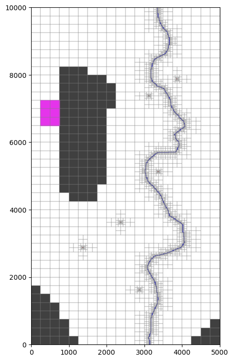
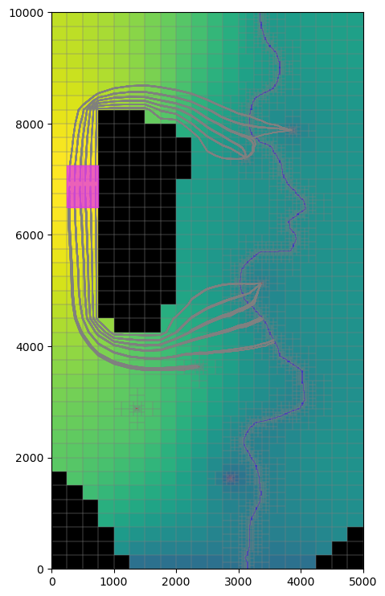
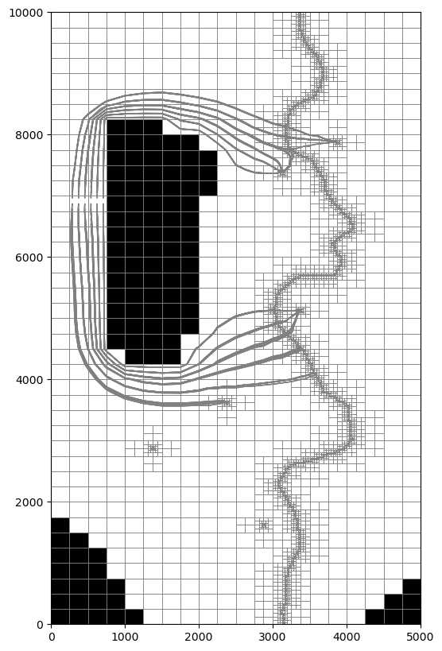

10: MODPATH demonstration¶
[1]:
import pathlib as pl
import pandas as pd
import matplotlib.pyplot as plt
import geopandas as gpd
from flopy.utils.gridintersect import GridIntersect
import flopy
Groundwater Modeling and Python Programming¶
In this exercise, we will use MODPATH to simulate advective transport with the Freyberg flow model. For this exercise, we will use a quadtree version of the Freyberg model.
The location of the contamination patch and the nodes that the define bounding cells of the patch are calculated below.
[2]:
# patch upper left and lower right
xmin, xmax = 250. * 1, 250. * 3
ymin, ymax = (40 - 14) * 250., (40 - 11) * 250.
csx, csy = [xmin, xmin, xmax, xmax, xmin], [ymin, ymax, ymax, ymin, ymin]
polygon = [list(zip(csx, csy))]
(xmin, ymax), (xmax, ymin)
[2]:
((250.0, 7250.0), (750.0, 6500.0))
Define the workspace and model names.¶
[3]:
load_ws = pl.Path('data/quadtree')
ws = pl.Path("temp/ex10a")
name = "project"
name_mp = f"{name}_mp"
exe_name = 'mf6'
Load the MODFLOW 6 Model¶
Load a simulation object using flopy.mf6.MFSimulation().load().
[4]:
sim = flopy.mf6.MFSimulation.load(sim_name=name, exe_name=exe_name,
sim_ws=load_ws, verbosity_level=0)
Load the groundwater flow model¶
[5]:
gwf = sim.get_model(name)
gwf.modelgrid
[5]:
xll:0.0; yll:0.0; rotation:0.0; units:meters; lenuni:2
Change the workspace¶
[6]:
sim.set_sim_path(ws)
Write the model files¶
[7]:
sim.write_simulation()
Run the simulation.
[8]:
sim.run_simulation()
[8]:
(True, [])
Create and Run the MODPATH model¶
Lets plot the model grid and the location of the contamination patch.¶
[9]:
fig, ax = plt.subplots(figsize=(5, 9))
mm = flopy.plot.PlotMapView(gwf, layer=0, ax=ax)
mm.plot_bc('SFR', color="b", plotAll=True)
mm.plot_bc('WEL', plotAll=True)
mm.plot_inactive(alpha=0.75)
mm.plot_grid(lw=0.25, color='grey')
ax.fill(csx, csy, color='#e534eb');

Find the node numbers of the contamination patch using the groundwater model grid object and the GridIntersect utility. The GridIntersect utility has an intersect method that can be used to identified cellids from points, lines, and polygons.
[10]:
gx = GridIntersect(gwf.modelgrid)
results = gx.intersect(polygon, 'Polygon')
nodes = results.cellids
nodes
[10]:
array([1352, 1353, 1459, 1460, 1581, 1582], dtype=object)
Create the MODPATH particle data¶
[11]:
# create
sd = flopy.modpath.CellDataType()
p = flopy.modpath.NodeParticleData(subdivisiondata=[sd],
nodes=list(nodes))
# create forward particle group
fpth = name_mp + '.sloc'
pg = flopy.modpath.ParticleGroupNodeTemplate(particlegroupname='contaminant',
particledata=p,
filename=fpth)
Create the MODPATH 7 files¶
[12]:
# create modpath files
mp = flopy.modpath.Modpath7(modelname=name_mp, flowmodel=gwf,
exe_name='mp7', model_ws=ws)
mpbas = flopy.modpath.Modpath7Bas(mp, porosity=0.1)
mpsim = flopy.modpath.Modpath7Sim(mp, simulationtype='pathline',
trackingdirection='forward',
weaksinkoption='pass_through',
weaksourceoption='pass_through',
referencetime=0.,
stoptimeoption='extend',
particlegroups=pg)
Write MODPATH 7 files and run the model¶
[13]:
# write modpath datasets
mp.write_input()
# run modpath
mp.run_model()
FloPy is using the following executable to run the model: ../../../../../../software/modflow_exes/mp7
MODPATH Version 7.2.001
Program compiled Aug 01 2021 12:57:00 with IFORT compiler (ver. 19.10.3)
Run particle tracking simulation ...
Processing Time Step 1 Period 1. Time = 1.00000E+00 Steady-state flow
Particle Summary:
0 particles are pending release.
0 particles remain active.
0 particles terminated at boundary faces.
0 particles terminated at weak sink cells.
0 particles terminated at weak source cells.
162 particles terminated at strong source/sink cells.
0 particles terminated in cells with a specified zone number.
0 particles were stranded in inactive or dry cells.
0 particles were unreleased.
0 particles have an unknown status.
Normal termination.
[13]:
(True, [])
Post-Process the MODFLOW and MODPATH Results¶
Load MODFLOW and MODPATH results from the heads and pathline files¶
Load the MODFLOW heads
[14]:
hobj = gwf.output.head()
[15]:
hds = hobj.get_data()
Load the pathline file
[16]:
ppth =ws / f"{name_mp}.mppth"
p = flopy.utils.PathlineFile(ppth)
p0 = p.get_alldata()
pd.DataFrame(p0[0]).head()
[16]:
| x | y | z | time | k | particleid | |
|---|---|---|---|---|---|---|
| 0 | 291.666656 | 7041.666504 | 25.157747 | 0.000000 | 0 | 0 |
| 1 | 292.265228 | 7053.434082 | 24.259151 | 1066.623169 | 0 | 0 |
| 2 | 296.871582 | 7187.314941 | 18.867577 | 9176.828125 | 1 | 0 |
| 3 | 298.295715 | 7250.000000 | 17.837860 | 11656.656250 | 2 | 0 |
| 4 | 327.380127 | 7500.000000 | 17.041315 | 17482.574219 | 2 | 0 |
Plot the heads and pathlines¶
[17]:
fig, ax = plt.subplots(figsize=(5, 9))
mm = flopy.plot.PlotMapView(model=gwf, layer=0, ax=ax)
mm.plot_array(hds, masked_values=[1e30])
mm.plot_bc('SFR', color='b', plotAll=True)
mm.plot_bc('WEL', plotAll=True)
mm.plot_ibound()
mm.plot_pathline(p0, layer='all', color='blue', edgecolor="None", lw=0.75)
mm.plot_grid(lw=0.5, color="0.5")
ax = plt.gca()
ax.fill(csx, csy, color='#e534eb', zorder=100, alpha=.75);

Export the pathlines to a shapefile¶
[18]:
spth = pl.Path(ws / 'pathline.shp')
p.write_shapefile(p0, mg=gwf.modelgrid, one_per_particle=False, shpname=spth)
{'names': ['x', 'y', 'z', 'time', 'k', 'particleid'], 'formats': ['<f4', '<f4', '<f4', '<f4', '<i4', '<i4'], 'offsets': [20, 24, 28, 16, 32, 0], 'itemsize': 60}
No CRS information for writing a .prj file.
Supply an valid coordinate system reference to the attached modelgrid object or .export() method.
Load the shapefile into geopandas¶
[19]:
rshp = gpd.read_file(spth)
/Users/aleaf/mambaforge/envs/pyclass/lib/python3.11/site-packages/geopandas/geodataframe.py:1645: DeprecationWarning: Passing a SingleBlockManager to Series is deprecated and will raise in a future version. Use public APIs instead.
srs = pd.Series(*args, **kwargs)
/Users/aleaf/mambaforge/envs/pyclass/lib/python3.11/site-packages/geopandas/geodataframe.py:1645: DeprecationWarning: Passing a SingleBlockManager to Series is deprecated and will raise in a future version. Use public APIs instead.
srs = pd.Series(*args, **kwargs)
Show the dataframe¶
[20]:
rshp.head()
/Users/aleaf/mambaforge/envs/pyclass/lib/python3.11/site-packages/pandas/core/frame.py:706: DeprecationWarning: Passing a BlockManager to GeoDataFrame is deprecated and will raise in a future version. Use public APIs instead.
warnings.warn(
/Users/aleaf/mambaforge/envs/pyclass/lib/python3.11/site-packages/geopandas/geodataframe.py:1645: DeprecationWarning: Passing a SingleBlockManager to Series is deprecated and will raise in a future version. Use public APIs instead.
srs = pd.Series(*args, **kwargs)
/Users/aleaf/mambaforge/envs/pyclass/lib/python3.11/site-packages/geopandas/geodataframe.py:1645: DeprecationWarning: Passing a SingleBlockManager to Series is deprecated and will raise in a future version. Use public APIs instead.
srs = pd.Series(*args, **kwargs)
/Users/aleaf/mambaforge/envs/pyclass/lib/python3.11/site-packages/geopandas/geodataframe.py:1645: DeprecationWarning: Passing a SingleBlockManager to Series is deprecated and will raise in a future version. Use public APIs instead.
srs = pd.Series(*args, **kwargs)
/Users/aleaf/mambaforge/envs/pyclass/lib/python3.11/site-packages/geopandas/geodataframe.py:1645: DeprecationWarning: Passing a SingleBlockManager to Series is deprecated and will raise in a future version. Use public APIs instead.
srs = pd.Series(*args, **kwargs)
/Users/aleaf/mambaforge/envs/pyclass/lib/python3.11/site-packages/geopandas/geodataframe.py:1645: DeprecationWarning: Passing a SingleBlockManager to Series is deprecated and will raise in a future version. Use public APIs instead.
srs = pd.Series(*args, **kwargs)
/Users/aleaf/mambaforge/envs/pyclass/lib/python3.11/site-packages/geopandas/geodataframe.py:1645: DeprecationWarning: Passing a SingleBlockManager to Series is deprecated and will raise in a future version. Use public APIs instead.
srs = pd.Series(*args, **kwargs)
/Users/aleaf/mambaforge/envs/pyclass/lib/python3.11/site-packages/geopandas/geodataframe.py:1645: DeprecationWarning: Passing a SingleBlockManager to Series is deprecated and will raise in a future version. Use public APIs instead.
srs = pd.Series(*args, **kwargs)
/Users/aleaf/mambaforge/envs/pyclass/lib/python3.11/site-packages/geopandas/geodataframe.py:1645: DeprecationWarning: Passing a SingleBlockManager to Series is deprecated and will raise in a future version. Use public APIs instead.
srs = pd.Series(*args, **kwargs)
/Users/aleaf/mambaforge/envs/pyclass/lib/python3.11/site-packages/geopandas/geodataframe.py:1645: DeprecationWarning: Passing a SingleBlockManager to Series is deprecated and will raise in a future version. Use public APIs instead.
srs = pd.Series(*args, **kwargs)
/Users/aleaf/mambaforge/envs/pyclass/lib/python3.11/site-packages/geopandas/geodataframe.py:1645: DeprecationWarning: Passing a SingleBlockManager to Series is deprecated and will raise in a future version. Use public APIs instead.
srs = pd.Series(*args, **kwargs)
/Users/aleaf/mambaforge/envs/pyclass/lib/python3.11/site-packages/geopandas/geodataframe.py:1645: DeprecationWarning: Passing a SingleBlockManager to Series is deprecated and will raise in a future version. Use public APIs instead.
srs = pd.Series(*args, **kwargs)
/Users/aleaf/mambaforge/envs/pyclass/lib/python3.11/site-packages/geopandas/geodataframe.py:1645: DeprecationWarning: Passing a SingleBlockManager to Series is deprecated and will raise in a future version. Use public APIs instead.
srs = pd.Series(*args, **kwargs)
/Users/aleaf/mambaforge/envs/pyclass/lib/python3.11/site-packages/geopandas/geodataframe.py:1645: DeprecationWarning: Passing a SingleBlockManager to Series is deprecated and will raise in a future version. Use public APIs instead.
srs = pd.Series(*args, **kwargs)
/Users/aleaf/mambaforge/envs/pyclass/lib/python3.11/site-packages/geopandas/geodataframe.py:1645: DeprecationWarning: Passing a SingleBlockManager to Series is deprecated and will raise in a future version. Use public APIs instead.
srs = pd.Series(*args, **kwargs)
/Users/aleaf/mambaforge/envs/pyclass/lib/python3.11/site-packages/geopandas/geodataframe.py:1645: DeprecationWarning: Passing a SingleBlockManager to Series is deprecated and will raise in a future version. Use public APIs instead.
srs = pd.Series(*args, **kwargs)
/Users/aleaf/mambaforge/envs/pyclass/lib/python3.11/site-packages/geopandas/geodataframe.py:1645: DeprecationWarning: Passing a SingleBlockManager to Series is deprecated and will raise in a future version. Use public APIs instead.
srs = pd.Series(*args, **kwargs)
[20]:
| x | y | z | time | k | particleid | geometry | |
|---|---|---|---|---|---|---|---|
| 0 | 292.265228 | 7053.434082 | 24.259151 | 1066.623169 | 1 | 1 | LINESTRING (291.667 7041.667, 292.265 7053.434) |
| 1 | 296.871582 | 7187.314941 | 18.867577 | 9176.828125 | 2 | 1 | LINESTRING (292.265 7053.434, 296.872 7187.315) |
| 2 | 298.295715 | 7250.000000 | 17.837860 | 11656.656250 | 3 | 1 | LINESTRING (296.872 7187.315, 298.296 7250.000) |
| 3 | 327.380127 | 7500.000000 | 17.041315 | 17482.574219 | 3 | 1 | LINESTRING (298.296 7250.000, 327.380 7500.000) |
| 4 | 351.953125 | 7750.000000 | 14.886883 | 21403.548828 | 3 | 1 | LINESTRING (327.380 7500.000, 351.953 7750.000) |
Plot the geopandas dataframe on the modelgrid¶
[21]:
fig, ax = plt.subplots(figsize=(6, 10))
pmv = flopy.plot.PlotMapView(gwf, ax=ax)
pmv.plot_grid(lw=0.5)
pmv.plot_shapes(rshp.geometry.to_list(), edgecolor="grey") #, edgecolor="b")
pmv.plot_ibound();
/Users/aleaf/mambaforge/envs/pyclass/lib/python3.11/site-packages/geopandas/geodataframe.py:1645: DeprecationWarning: Passing a SingleBlockManager to Series is deprecated and will raise in a future version. Use public APIs instead.
srs = pd.Series(*args, **kwargs)

[ ]: